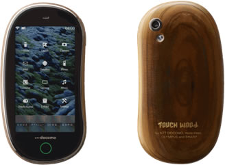

Кроме того, что японский оператор Docomo выпустил телефон в корпусе из древесины — Touch Wood SH-08C, так он еще и заказала у рекламного агенства Drill совершенно крышесносящую по идее и воплощению рекламу своей новинки.
Катящийся по гигантскому деревянном ксилофону деревянный шарик катится не просто так. Ксилофон воспроизводит ни много ни мало 147 Кантату Баха «Jesu, Joy of Man’s Desiring».
Что касается самого телефона, то материалом для его корпуса выступила древесина, полученная в рамках программы оздоровления лесов. Выполненный из настоящего кипариса, телефон Touch Wood обладает долговечностью и водоотталкивающими свойствами.
